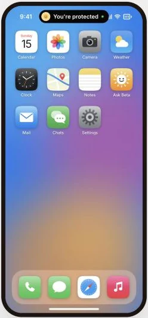
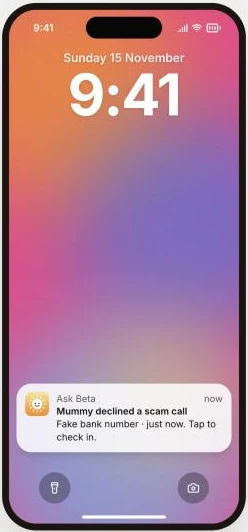

Case study 03 · Ask Beta Concept and working prototype · Built at SheBuilds with Lovable · 2026
Like asking your kid, even when they can’t pick up
Ask Beta is a tiny helper that lives quietly on a parent’s phone. When a call or message looks like a scam, a small sun explains what’s wrong in plain words, suggests one safe step, and tells their child.

Problem
When a suspicious call comes in, my parents’ first thought is “let’s ask Beta” (बेटा, “my child”). But I’m often in meetings or far away.
Insight
Warnings get ignored, and shame stops people asking. Asking has to feel normal, fast and private.
Solution
A sun that appears only when something looks wrong, explains it in plain words, suggests one safe step and lets the child know.
Result
A working prototype with simulated detection. Next: testing with real parents.
Detection is simulated in this prototype, and every number, name and message in it is fictional.
01 Problem
Scams that start with a phone call cost more
Sources: UK Finance Annual Fraud Report 2026; Starling Bank, 2024. Research: desk research and conversations with my parents.
Parent
- “Is this real? They sound so sure.”
- “What if it really was the bank?”
- “I feel silly asking.”
Child
- “A missed call, I assume the worst.”
- “I can’t answer from a meeting.”
- “I only hear after the money’s gone.”
What I learned
- Urgency is the weapon.
- A familiar voice can arrive on a new channel.
- Secrecy is a red flag.
- Shame stops people asking.
- Warnings get ignored.
02 Direction
Don’t add warnings. Make asking normal.
The principle: don’t add more warnings. Make asking normal, fast and private. I explored three directions against it.
| Direction | Idea | Outcome |
|---|---|---|
| A | Share and check: the parent shares the call or message, Beta explains it and tells the child | Chosen |
| B | A family safe phrase to confirm who is really calling | Not taken forward |
| C | Pause with a cool-off before any payment | Not taken forward |
03 How it works
Real screens from the prototype
The prototype plays one story across two phones: Mummy’s and mine.




04 Decisions
Calm, familiar and in her control
Made for older eyes
- Big, readable text
- Familiar app icons
- One action per screen
- The sun is the only colour
The parent stays in control
- She chooses whether her child is told
- “It’s someone I know” stops repeat warnings for a number
- Beta can be paused for an hour
- If she thinks she’s been scammed, her child is always told
Loading the prototype…
05 AI
How AI helped
In my process
- Research synthesis with Claude
- Built and iterated in Lovable
- The calls on direction and tone stayed mine
In the product
- Spots scam patterns
- Explains them in plain words
- Writes the summary the child receives
Detection is simulated in this prototype.
06 Next
Test with real parents
The next step is moderated testing with parents on three scenarios, including one that should not trigger a warning:
- A “Hi Mum, new number” text asking for money
- A fake bank “safe account” call
- A genuine message, to check for false alarms
Next case study · 04
Pfizer.com →